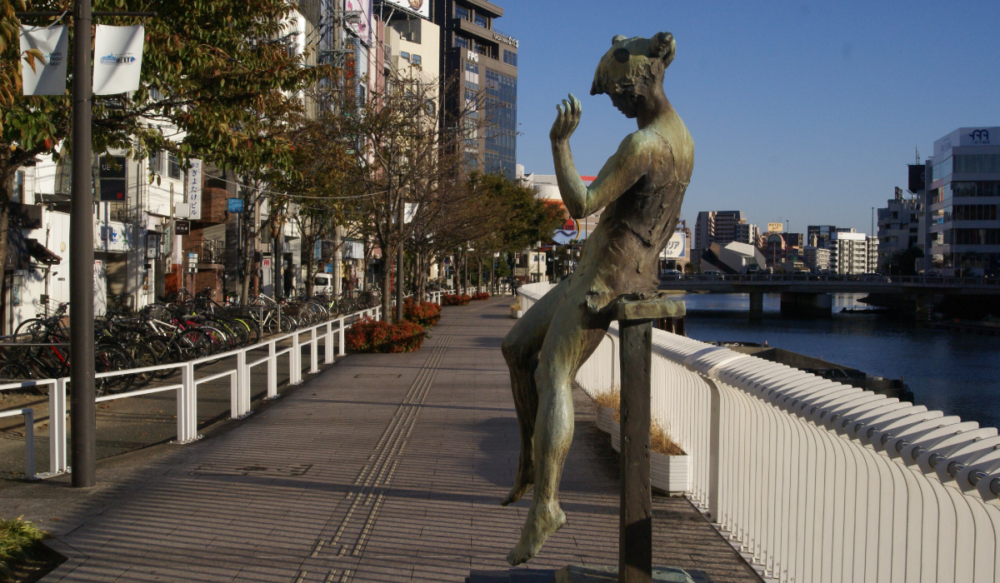
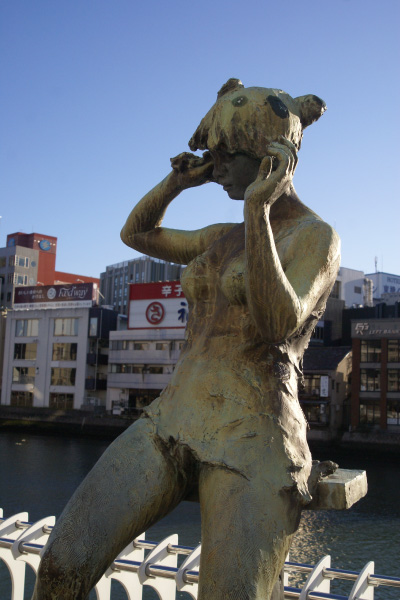
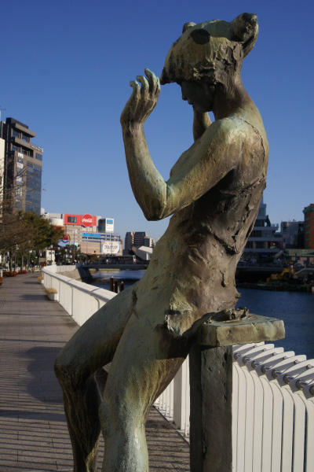
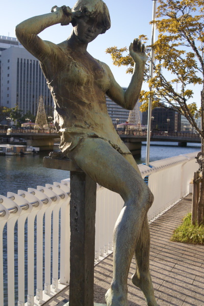
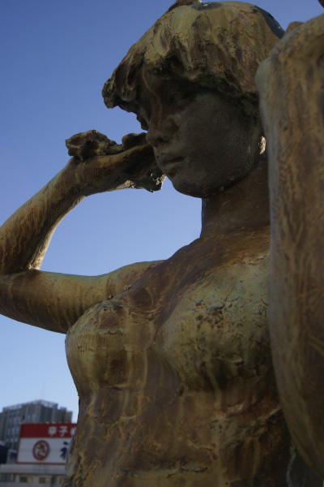
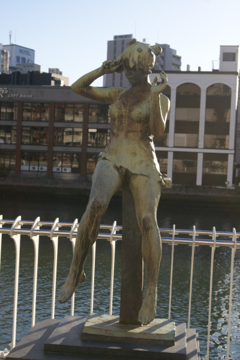
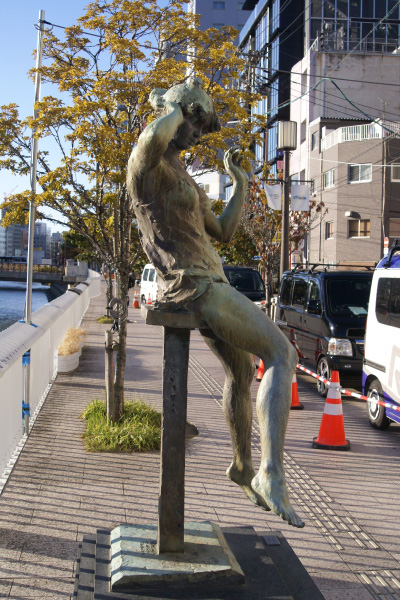
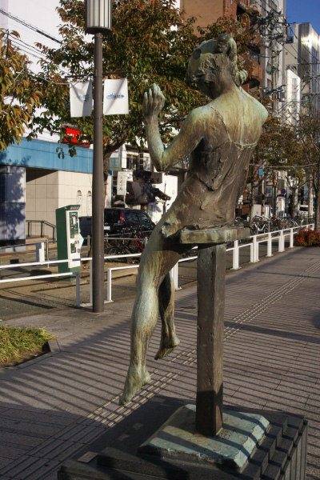

高倉 準一
      
歓楽街中洲の那珂川に沿って敷かれた歩道。明治通り側から国体道路側へ向かって歩いていると
風に吹かれる女性の像が見られる。作者は福岡県出身の彫刻家高倉準一。福岡県出身の彫刻家である。
彼の作品は県内を中心に公共施設や、美術館等に設置されているが、ここ中洲に設置された
「微風」は彼の代表作品と言っても良いのではないだろうか。「生きいきとした人体自然の生命力
と啓示的な美しい自然と共生する共感共鳴のその内面の深さを唯一対象として制作してきた」と
彼は語る。「微風」は生命力を感じる人体の美しさを女性像で形作り、「風」という自然を
なびく衣服や、彼女の仕草で表現している。那珂川の開放感もあり、じっくり見るとより美しい彫刻だ。